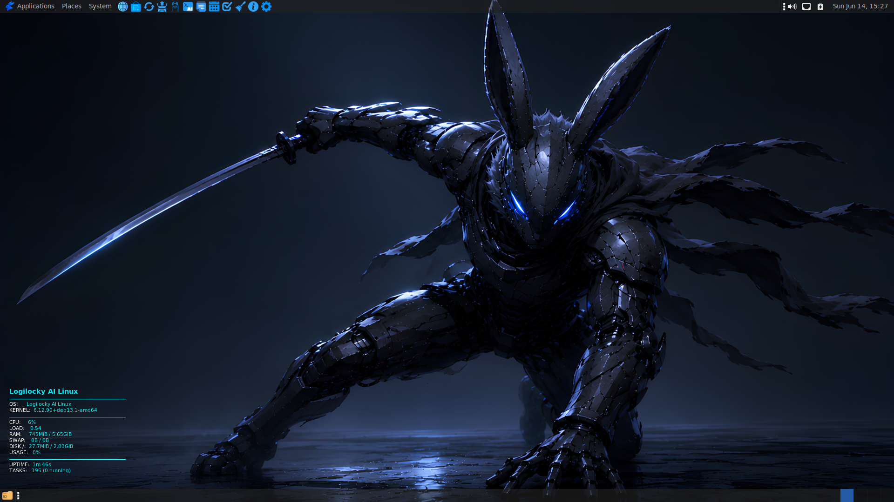
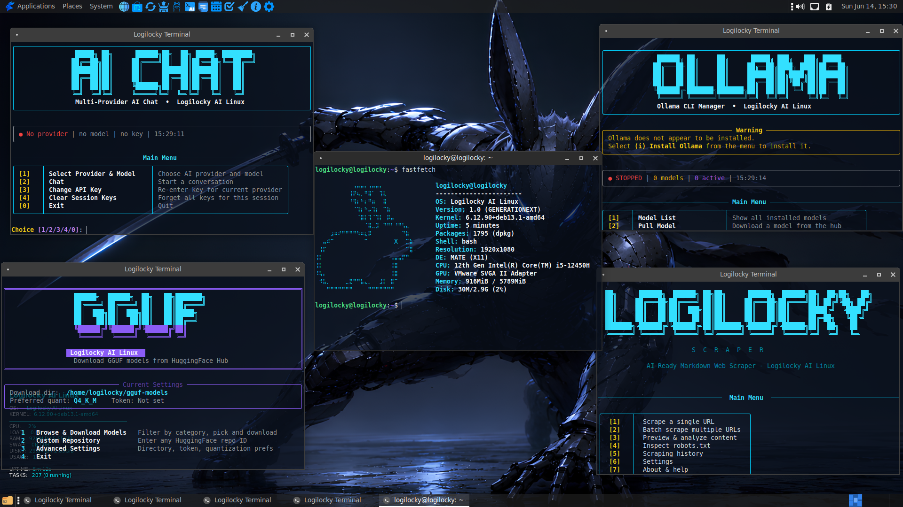
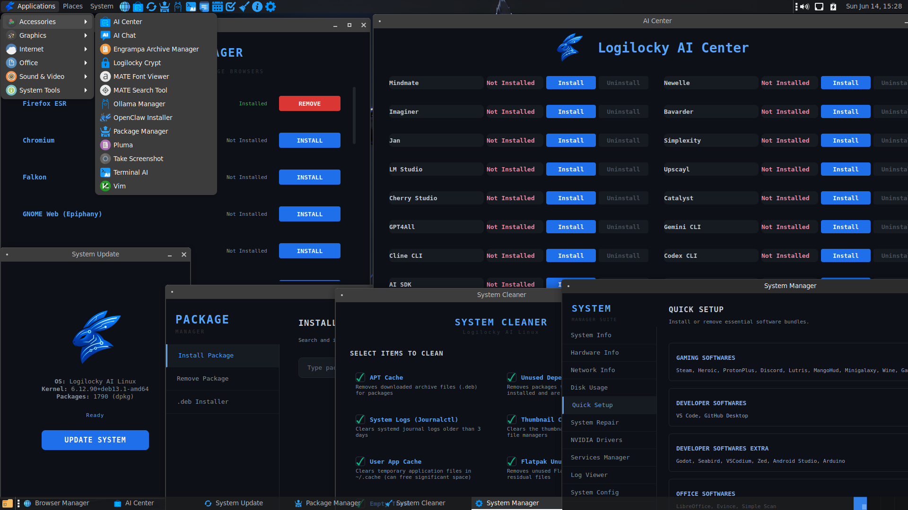
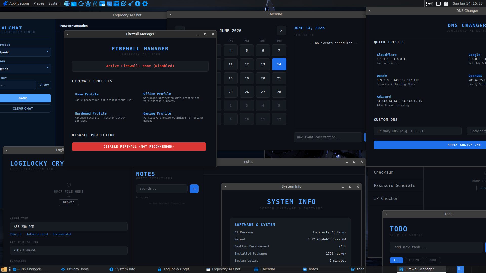

Logilocky AI Linux is a Linux distribution built on top of Debian. The goal of the distribution is to run offline AI models, provide a suitable environment for AI developers, make AI tools easily accessible, and offer an easy-to-use experience for Linux beginners. It also provides tuned kernel settings specifically optimized for AI workloads.
The distribution has its own rich ecosystem, featuring numerous desktop applications built from scratch for Logilocky. This includes tools for daily use, AI utilities, package and system management, office tasks, security, and privacy.
It uses the standard Debian installer and the MATE desktop environment. A live try feature is also available so you can test it before installing.



